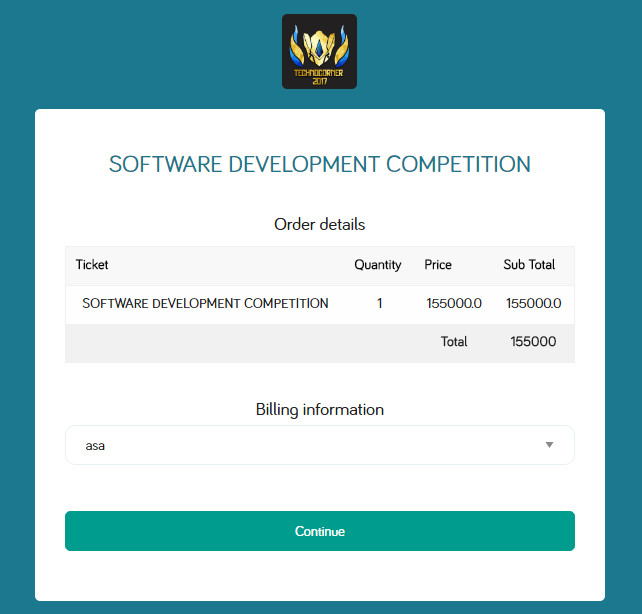
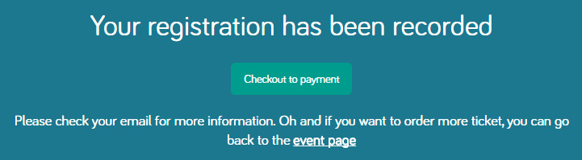
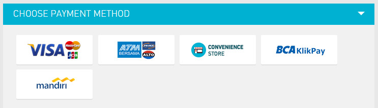
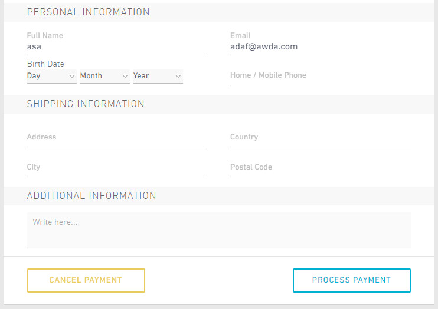

Software Development Competition (SDC) pada Technocorner 2017 merupakan kompetisi pengembangan aplikasi smartphone yang dapat memberikan solusi praktis atas permasalahan yang ada di masyarakat serta inovasi di bidang teknologi.
SDC diperuntukkan bagi mahasiswa program sarjana dan diploma seluruh Indonesia. Peserta berkompetisi dalam tim yang beranggotakan maksimal tiga orang. Pada babak penyisihan, peserta mengirimkan proposal dan mengunggah video tentang aplikasi yang akan dikembangkan. Peserta yang lolos seleksi proposal dan video selanjutnya mengirimkan prototype atau aplikasi yang dikembangkan sebagai syarat untuk mengikuti babak final. Pada babak final,peserta melakukan presentasi di depan dewan juri serta menampilkan karya mereka di Technoexpo 2017.
Tema
“Digitize Indonesia for a Great Future with Innovative Mobile Apps”
Hadiah
Total Hadiah Rp 13.500.000,00.
Jadwal Pelaksanaan
Waktu |
Kegiatan |
|---|---|
| 19 Desember 2016 – 10 Februari 2017 | Pendaftaran online |
| 19 Desember 2016 – 17 Februari 2017 | Pengumpulan proposal secara online |
| 18 Februari 2017 – 22 Februari 2017 | Penilaian karya dan Pengumuman finalis |
| 23 Februari 2017 – 1 Maret 2017 | Pengumpulan prototype / aplikasi yang dikembangkan secara online |
| 11 Maret 2017 – 12 Maret 2017 | Babak final SDC di Yogyakarta |
Fasilitas Peserta
Seminar kit, snack, makan siang, e-sertifikat (peserta)
Sertifikat (finalis)
Contact Person
Rayyan
- HP : 085708107225
- LINE : ahmadirayyan
Persyaratan Peserta
- Peserta masih berstatus sebagai mahasiswa aktif dengan jenjang D1, D2, D3, D4,dan S1 dalam lingkup perguruan tinggi seluruh Indonesia.
- Jumlah peserta (tim) dari tiap perguruan tinggi tidak dibatasi
- Setiap tim maksimal terdiri dari 3 orang yang berasal dari perguruan tinggi yang sama.
- Satu orang diperbolehkan terdaftar dalam beberapa tim, tetapi hanyadiperbolehkan menjadi ketua dari maksimal satu tim.
- Penggantian anggota tim, revisi nama anggota dan tim harus dikonfirmasikankepada panitia paling lambat tanggal 10 Februari 2017. Jika tidak melakukankonfirmasi penggantian, maka peserta yang bersangkutan tidak diakui.
Persyaratan Karya
- Karya perangkat lunak berupa aplikasi smartphone. Tidak ada batasan sistemoperasi smartphone yang digunakan.
- Aplikasi belum pernah diproduksi secara massal dan/atau diperjualbelikan.
- Aplikasi tidak menyinggung unsur SARA (Suku, Agama, Ras, dan Antar Golongan).
- Apllikasi tidak mengandung unsur pornografi dan kriminal.
- Karya belum pernah memenangkan kejuaraaan (baik juara 1, 2, 3 ataupun harapan) pada lomba lain, di tingkat nasional maupun internasional.
- Hak cipta aplikasi tetap menjadi milik peserta.
Ketentuan Proposal
- Format, konten, dan layout proposal bebas, minimal 10 halaman A4
- Mencantumkan identitas tim
- Proposal dibuat semenarik mungkin
- Mencantumkan link video yang telah diunggah di Youtube
- Proposal yang diunggah berupa file PDF (*.pdf) dengan ukuran maksimal 20 megabytes
Ketentuan Video
- Mencantumkan template pembuka video (bumper video) yang telah disediakanTechnocorner 2017. Bumper video dapat diunduh disini
- Mencantumkan identitas tim
- Video berisi deskripsi singkat aplikasi, cara penggunaan aplikasi, dsb
- Durasi video maksimal 3 menit
- Diunggah ke Youtube dengan format :
- Judul video : [TECHNOCORNER2017] - [Nama Tim] - [Nama Aplikasi]
- Deskripsi video : #TECHNOCORNER2017 #SoftwareDevelopmentCompetition
- Atur hak akses link menjadi unlisted
Kategori Penilaian
Proposal
- Originalitas Ide
- Produk / software utama yang dikembangkan
- Penyelesaian masalah
- Layout / Design
- Tata bahasa penulisan
Video
- Format
- Kualitas
- Konten
- Kreatifitas
- Jumlah viewer, like, dan comment
Bobot penilaian proposal : poster = 55 : 45
Pengumpulan Karya
- Proposal yang dikumpulkan dalam format *.pdf dengan nama file :
- SDC2017-[NAMA TIM]-[NAMA KARYA]
- Contoh : SDC2017-TeamTC-AplikasiX
- SDC2017-[NAMA TIM]-[NAMA KARYA]
- File *.pdf tersebut berukuran maksimal 20 megabytes
- Proposal dikirimkan melalui email ke
pendaftaran@technocornerugm.com
dengan subjek sama seperti nama file proposal. - Pengumpulan proposal paling lambat tanggal 17 Februari2017.
- Sepuluh tim yang lolos seleksi proposal dan video akan maju ke babak final yang akan dilaksanakan selama dua hari. Sepuluh tim yang lolos ke babak final diwajibkan mengirimkanprototype aplikasi yang dikembangkan paling lambat tanggal 1 Maret 2017.
- Pengumuman tim yang lolos ke babak final dapat dilihat pada website Technocorner 2017.
Biaya Pendaftaran
Biaya pendaftaran lomba adalah Rp 150.000,00* per Tim
(*): biaya akan ditambahkan Rp5000,00 untuk administrasi pembayaran jika melalui doku wallet
Periode Pendaftaran
Tanggal : 19 Desember 2016 – 10 Februari 2017*
(*) : Pendaftaran akan ditutup jika kuota telah terpenuhi
Syarat Pendaftaran
- Menentukan :
- Nama Tim*
- Ketua Tim
- Anggota Tim
- Mempersiapkan :
- Pas foto 3×4 (berwarna background bebas/hitam putih)
- Scan KTM/Kartu Pelajar semua anggota
- Biodata diri tiap anggota (Nama, No. Induk, TTL, No Telp, Alamat).
Nama tim dan ketua tim diharapkan tidak berubah setelah mendaftar.
Alur Pendaftaran Online
- Membaca dan memahami Syarat dan Ketentuan
- Mengunduh formulir pendaftaran di bawah ini.
- Mengisi form dan melengkapi berkas-berkas pada formulir, kemudian mengupload formulir dalam bentuk .pdf dengan nama SDC_NAMA TIM_NAMA KETUA.pdf pada link di bawah.
- Mengisi formulir online dan mengupload formulir pendaftaran pada link di bawah ini.
-
Petunjuk Pembayaran :
Metode pembayaran dapat dilakukan dengan 2 cara, yaitu :
- Offline :
- Online :
-
Setelah selesai melakukan pengisian formulir online tekan continue pada Billing Information.
 -
Kemudian tekan check out payment.
 -
Tunggu hingga muncul halaman metode pembayaran. Kemudian silahkan pilih metode pembayaran yang diinginkan.
 -
Kemudian isi data diri dengan sebenar-benarnya. Setelah selesai kemudian tekan Process Payment.
 - Tunggu hingga selesai kemudian silahkan mengecek email yang sebelumnya dicantumkan pada form pendaftaran.
- Lakukan pembayaran sesuai dengan petunjuk yang dikirim melalui email.
Untuk pembayaran secara offline dapat dilakukan dengan mendatangi stand Technocorner 2017 di gedung KPFT Lantai 1 Universitas Gadjah Mada.
- Pembayaran dilakukan paling lambat 10 Februari 2017. Menerima dan memeriksa email konfirmasi telah terdaftar sebagai peserta Technocorner 2017 pada email ketua tim. Jika peserta sudah melakukan pembayaran dan melengkapi berkas, namun dalam 2x24 jam belum mendapatkan email konfirmasi, silakan menghubungi panitia melalui CP
Alur Pendaftaran Langsung
- Periode Pendaftaran : 26 Januari 2017 - 10 Februari 2017
- Waktu Pendaftaran : Pukul 10.00 - 16.00 WIB, setiap hari Senin-Jum’at (Hari Libur Nasional tutup)
- Lokasi pendaftaran : Kantor Pusat Fakultas Teknik (KPFT) UGM lantai 1
- Menyiapkan berkas pendaftaran untuk diletakkan pada formulir pendaftaran, yaitu:
- Pas foto 3×4 (berwarna background bebas/hitam putih)
- Scan KTM/Kartu Pelajar semua anggota
- Biodata diri tiap anggota (Nama, No. Induk, TTL, No Telp, Alamat).
- Kemudian mengisi formulir yang disediakan serta membayar biaya pendaftaran.
- Jika berkas telah sesuai persyaratan dan lengkap, peserta akan mendapatkan email konfirmasi bahwa sudah terdaftar sebagai peserta kompetisi Technocorner.
Contact Person
Isna (087838724604)
LINE : baridisna
Formulir Pendaftaran
File Petunjuk Teknis SDC
Video Bumper
Tutorial Upload Video
Frequently Asked Question
Q : SDC itu kompetisi apa sih Kak?
A : Sesuai namanya, Software Development Competition adalah kompetisi dalam hal pengembangan software (perangkat lunak). Tahun ini, software yang dilombakan adalah aplikasi smartphone.
Q : Adakah batasan platform atau Sistem Operasi yang digunakan?
A : Tidak ada batasan dalam platform maupun Sistem Operasi dari smartphone yang digunakan. Jadi aplikasi yang dikembangkan boleh berupa aplikasi Android, Windows Phone, IOS, dll.
Q : Tahapan / bentuk perlombaannya apa saja, Kak?
A : Ada dua tahap, yaitu babak Penyisihan dan babak Final. Pada babak Penyisihan, peserta membuat video dan proposal tentang aplikasi yang dikembangkan. Video diunggah ke Youtube dan alamatnya dimuat ke dalam proposal. Proposal dikirim melalui email ke pendaftaran@technocornerugm.com.Pada babak Final, peserta melakukan presentasi di depan dewan juri dan pameran (expo).Untuk penjelasan lebih lengkap, klik http://technocornerugm.com/sdc/#/juknis
Q : Berapa tim yang lolos ke babak final?
A : Sepuluh tim terbaik berdasarkan penilaian Proposal dan Poster akan masuk ke babak final.
Q : Apakah boleh satu tim terdiri dari anggota yang berbeda universitas?
A : Mohon maaf, satu tim hanya boleh terdiri dari anggota dari universitas / perguruan tinggi yang sama.
Q : Berapakah besarnya biaya pendaftaran?
A : Biaya pendaftaran sebesar Rp 150.000,00.
Untuk lebih jelas tentang proses pendaftaran, klik http://technocornerugm.com/sdc/#/pendaftaran
Q : Apakah aplikasi yang sudah pernah dilombakan boleh diikutkan dalam SDC?
A : Boleh, dengan catatan aplikasi tersebut belum pernah memenangkan perlombaan lain dan/atau diproduksi secara masal / diperjualbelikan.
Q : Boleh minta dirangkum tanggal-tanggal penting untuk SDC?
A : Tanggal penting untuk babak penyisihan :
- 19 Desember 2016 - 10 Februari 2017 : Pendaftaran Online
- 19 Desember 2015 - 17 Februari 2017 : Pengumpulan Online Proposal dan Poster
Q : Bagaimana cara upload video di Youtube kak?
A : Silahkan unduh tutorial yang kami sediakan di http://technocornerugm.com/sdc/#/download
Q : Terus, untuk babak finalnya kapan, Kak?
A : Babak final akan diadakan tanggal 11-12 Maret 2017 di Gedung Mandala Bhakti Wanitatama, Yogyakarta.